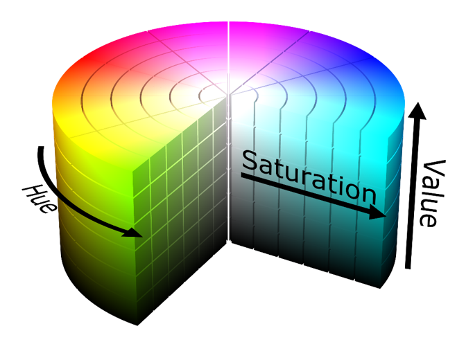

1.在HSV空间检测肤色
上一章介绍了一些颜色空间，其中包含了HSV颜色空间。这里我示范如何使用HSV阈值检测皮肤。注意看HSV空间中的Hue通道，是否有察觉最左边是红色，最右边也是红色？是的，颜色重复了。与其说是重复了，更准确来说是“环绕了一圈”。从上一章，我们看到了其实HSV空间显为一个圆柱体，Hue通道的值是从0°至360°（OpenCV内为了节省内存空间，范围这是0~180）
皮肤，我们都知道颜色是带红的。那我们该怎么从图像中正确地分割出皮肤区域呢？
很简单，与其使用一个范围值，我们使用两个范围值就好了呀。一个为左边的Hue范围，另一个为右边的Hue范围。
使用上章的拉动条测试，我获得了以下的两个范围：
H: 0 < H < 20 || 160 < H < 180 S: 0.1*255 < S < 0.65*255 V: 为了增强对光照的鲁棒性，不限定V的范围, 0 < V < 225
#include <opencv2/opencv.hpp>
using namespace cv;
int main()
{
//我们使用默认相机为输入
VideoCapture capture;
capture.open(0);
Mat frame;
while(1)
{
//从相机获取图侦
capture >> frame;
//转换到hsv空间
Mat hsvImg, maskHSV, maskHSVTemp;
cvtColor(frame,hsvImg,CV_BGR2HSV);
//第一个范围
Scalar minHSV(0, 0.1*255, 0);
Scalar maxHSV(20, 0.65*255, 255);
inRange(hsvImg, minHSV, maxHSV, maskHSVTemp);
//第二个范围
minHSV = Scalar(160, 0.1*255, 0);
maxHSV = Scalar(180, 0.65*255, 255);
inRange(hsvImg, minHSV, maxHSV, maskHSV);
//两个范围得到的蒙版相加在一起
maskHSV += maskHSVTemp;
//最后和运算并显示
Mat skinImg;
bitwise_and(frame, frame, skinImg, maskHSV);
namedWindow("frame",0);
namedWindow("skinImg",0);
imshow("frame",frame);
imshow("skinImg",skinImg);
if(waitKey(1) == 'q')
break;
}
return 0;
}